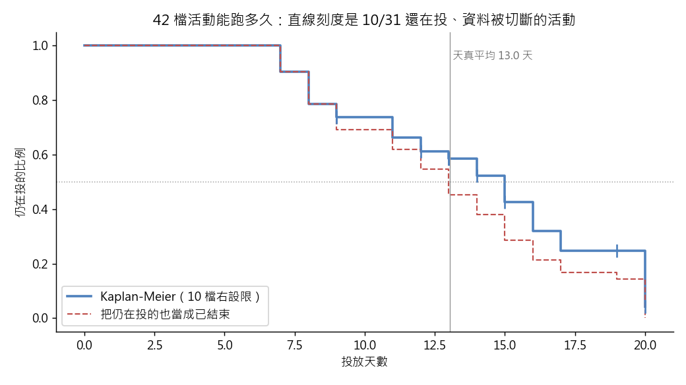

練習 18 - 廣告活動能跑多久
在本單元中，會介紹第 18 題「業務要排下一季的版位庫存，問你一檔廣告活動平均能跑多久」從頭到尾實際跑一次的方法、跑出來的數字，以及畫出來的圖。
這一頁是做完之後對答案用的。還沒動手的話，先回 Hub - 資料分析練習案例庫 找到這一題，照「怎麼做」那一欄自己跑一次再回來。
題目
有人會這樣問你：我們手上一檔廣告活動大概會投多久才結束？我要用這個數字估下一季同一時間會有幾檔在跑、版位夠不夠賣。
| 難度 | 進階 |
| 組別 | 第 6 組：時間、存活與回頭看的陷阱 |
| 用哪張表 | ad_daily（L1 或 L2 的 ad_daily_2024_10.csv） |
| 對應單元 | 訂戶能撐多久 存活分析（R） |
方法
以 campaign_id 分組，取每檔活動出現的第一天與最後一天，算出「已經觀察到的投放天數」。最後一天不是 10/31 的視為已經結束（event = 1）；最後一天正好落在 10/31 的，代表資料被切斷、我們只知道它至少投了這麼久，標成右設限（event = 0）。在 R 裡用 survival 套件跑 Surv(天數, event) 與 survfit()，畫 Kaplan-Meier 曲線、讀中位存活天數與信賴區間，再跟「把全部活動都當成已結束」的平均值並排比較。用 R 的理由：survival 的 survfit() 只要「時間」跟「有沒有結束」兩個欄位，就直接把設限算進去並給出中位數與信賴區間，不必自己推公式或另外裝套件。
程式
這一題的分析用 R 跑，整支程式如下。R 的程式要從 kmg_data_universe 這個資料夾執行，資料放在 dist/L1 與 dist/L2。
# ex18 一檔廣告活動平均能跑多久：右設限與 Kaplan-Meier（R：survival）
# 檢查項目名稱用英文，理由同 ex07。
suppressMessages(library(survival))
res_dir <- "teacher/exercise_runs/results"
dir.create(res_dir, showWarnings = FALSE, recursive = TRUE)
out <- data.frame(name = character(), expected = character(), actual = character(), ok = logical(),
stringsAsFactors = FALSE)
chk <- function(name, expected, actual, tol) {
a <- as.numeric(actual)
out[nrow(out) + 1, ] <<- list(name, as.character(expected), as.character(round(a, 4)),
isTRUE(abs(a - as.numeric(expected)) <= tol))
}
flag <- function(name, ok, detail) {
out[nrow(out) + 1, ] <<- list(name, "", detail, isTRUE(ok))
}
a <- read.csv("dist/L1/ad_daily_2024_10.csv", fileEncoding = "UTF-8-BOM", stringsAsFactors = FALSE)
dn <- as.numeric(as.Date(a$stat_date))
first <- tapply(dn, a$campaign_id, min)
last <- tapply(dn, a$campaign_id, max)
present <- tapply(dn, a$campaign_id, function(x) length(unique(x)))
dur <- as.numeric(last - first + 1)
event <- ifelse(last == as.numeric(as.Date("2024-10-31")), 0, 1)
chk("n_campaigns", 42, length(dur), 0)
chk("n_right_censored", 10, sum(event == 0), 0)
chk("naive_mean_days", 13.0, mean(dur), 0.06)
fit <- survfit(Surv(dur, event) ~ 1)
s14 <- summary(fit, times = 14)$surv
chk("km_survival_at_day14", 0.52, s14, 0.01)
med <- as.numeric(summary(fit)$table["median"])
chk("km_median_days", 15, med, 0)
chk("ended_mean_days", 12.8, mean(dur[event == 1]), 0.06)
chk("censored_observed_mean_days", 13.7, mean(dur[event == 0]), 0.06)
ci <- summary(fit)$table[c("0.95LCL", "0.95UCL")]
chk("km_median_ci_lower", 12, ci[1], 0)
chk("km_median_ci_upper", 17, ci[2], 0)
flag("KM_CI", TRUE, sprintf("median %.1f, 95%% CI %s to %s", med, ci[1], ci[2]))
flag("PITFALL", med > mean(dur), sprintf("KM median %.1f vs naive mean treating all as ended %.2f", med, mean(dur)))
fit1 <- survfit(Surv(dur, rep(1, length(dur))) ~ 1)
med1 <- as.numeric(summary(fit1)$table["median"])
no_gaps <- all(present == dur)
flag("SELFCHECK", no_gaps && (med1 != med),
sprintf("no gaps in any campaign: %s; median with censoring %.1f vs all events %.1f", no_gaps, med, med1))
write.table(out, file.path(res_dir, "ex18.tsv"), sep = "\t", row.names = FALSE, fileEncoding = "UTF-8")
print(out)
out 那張表是對照檢查：每一列把入口頁寫的數字跟實際算出來的放在一起比，PITFALL 與 SELFCHECK 兩列記錄坑有沒有出現、自己驗那一步有沒有效。
畫圖的程式
圖用 Python 畫，因為 Windows 上 R 的中文字型不好設定。這支程式照同一套定義重算一次，順便確認跟 R 算出來的一樣。
"""第 18 題的圖（R 那支用 survival 算數字，這支用同一套定義手算 Kaplan-Meier 再畫中文圖）。"""
from _kmg import *
r = R(18, "業務要排下一季的版位庫存，問你一檔廣告活動平均能跑多久", suffix="_py")
a = ad()
g = a.groupby("campaign_id")["stat_date"].agg(["min", "max"])
dur = ((g["max"] - g["min"]).dt.days + 1).values
event = (g["max"] != pd.Timestamp("2024-10-31")).astype(int).values
def km(t, e):
times = np.sort(np.unique(t[e == 1]))
s, out = 1.0, [(0, 1.0)]
for u in times:
at_risk = (t >= u).sum()
s *= 1 - ((t == u) & (e == 1)).sum() / at_risk
out.append((u, s))
return out
curve = km(dur, event)
naive = km(dur, np.ones_like(event))
def median(c):
return next(t for t, s in c if s <= 0.5)
def surv_at(c, x):
return [s for t, s in c if t <= x][-1]
r.chk("Python 重算 第 14 天仍在投的比例", 0.52, surv_at(curve, 14), tol=0.01)
r.chk("Python 重算 全部當成已結束的平均天數", 13.0, float(dur.mean()), tol=0.06)
r.note("Kaplan-Meier 曲線第一次降到 0.5 以下是第 %d 天；把 10 檔仍在投的當成已結束，是第 %d 天" % (
median(curve), median(naive)))
fig, ax = plt.subplots(figsize=(8, 4.5))
ax.step([t for t, _ in curve], [s for _, s in curve], where="post", color="#4f81bd", lw=2,
label="Kaplan-Meier（10 檔右設限）")
ax.step([t for t, _ in naive], [s for _, s in naive], where="post", color="#c0504d", lw=1.2, ls="--",
label="把仍在投的也當成已結束")
cens = dur[event == 0]
ax.scatter(cens, [surv_at(curve, x) for x in cens], marker="|", s=120, color="#4f81bd", zorder=3)
ax.axhline(0.5, color="#999999", lw=0.8, ls=":")
ax.axvline(dur.mean(), color="#999999", lw=0.8)
ax.text(dur.mean(), 0.95, " 天真平均 %.1f 天" % dur.mean(), fontsize=9, color="#666666")
ax.set_xlabel("投放天數")
ax.set_ylabel("仍在投的比例")
ax.set_title("42 檔活動能跑多久：直線刻度是 10/31 還在投、資料被切斷的活動")
ax.legend(loc="lower left")
save_fig(fig, "ex18_survival.png")
r.save()
程式開頭的 from _kmg import * 載入共用的讀檔、去重、換幣別與畫圖函式，內容在 練習 01 - 月會上的則數對不對 的「共用的讀檔函式」那一段。
結果
全月 42 檔活動，其中 10 檔在 10/31 當天還在投放，也就是大約四分之一是右設限。把全部都當成已結束算平均是 13.0 天；但 KM 曲線顯示投到第 14 天時還有 52% 的活動活著，中位存活天數是 15 天（95% 信賴區間 12 到 17 天），比天真平均多兩天。已結束的那 32 檔平均 12.8 天，還在跑的那 10 檔「已經投了」平均 13.7 天，而它們真正的長度一定比 13.7 天更長。
實際跑出來的數字
下表每一列都是程式實際算出來的值，11 項全部跟上面那段文字對得起來。
| 項目 | 實跑結果 |
|---|---|
| 活動檔數 | 42 |
| 10/31 仍在投的右設限檔數 | 10 |
| 全部當成已結束的平均天數 | 13.0476 |
| 第 14 天仍在投的比例 | 0.5228 |
| Kaplan-Meier 中位存活天數 | 15 |
| 已結束者平均天數 | 12.8438 |
| 仍在投者已觀察平均天數 | 13.7 |
| 中位存活 95% 信賴區間下限 | 12 |
| 中位存活 95% 信賴區間上限 | 17 |
| Python 重算 第 14 天仍在投的比例 | 0.5228 |
| Python 重算 全部當成已結束的平均天數 | 13.0476 |
補充
- Kaplan-Meier 中位存活 15.0 天，95% 信賴區間 12 到 17 天
- Kaplan-Meier 曲線第一次降到 0.5 以下是第 15 天；把 10 檔仍在投的當成已結束，是第 13 天
圖表

藍色階梯是 Kaplan-Meier 曲線，上面的短直線是 10/31 還在投、資料被切斷的活動；紅色虛線是把它們也當成已經結束。灰色直線是把全部活動當成已結束算出的平均 13.0 天。
這題的坑，實際跑的時候有沒有出現
把右設限當成已經結束，這是存活分析最典型的誤用。資料只到 10/31，當天還在跑的活動被硬生生切斷，直接拿最後一天減第一天去平均，一定會低估檔期，而且低估的方向永遠一致（愈長的活動愈容易被切到）。另一個要順手看一眼的是活動中間有沒有斷檔：只要有幾天沒出現，用頭尾相減就會高估它實際投放的天數。
實際跑的結果：Kaplan-Meier 的中位存活是 15.0 天，把全部活動當成已結束算出的平均是 13.05 天。
自己驗那一步抓不抓得到錯
先算每檔活動「出現過的日期數」跟「最後一天減第一天加一」是否相等，這份資料應該 42 檔全部相等，代表沒有斷檔；再把 event 欄全部改成 1 重跑一次 survfit()，如果中位數完全沒變，代表你的設限旗標根本沒被吃進去。
實際跑的結果：每一檔活動從第一天到最後一天都沒有中斷；考慮右設限的中位數 15.0 天，把仍在投的也當成已結束是 13.0 天。
接著做
上一題 練習 17 - 找出炎上的留言區、下一題 練習 19 - 月中報表與年底報表對不起來，或回到 Hub - 資料分析練習案例庫 挑別的題目。
學生版｜更新於 2026-09-13 10:38